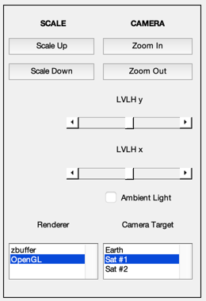
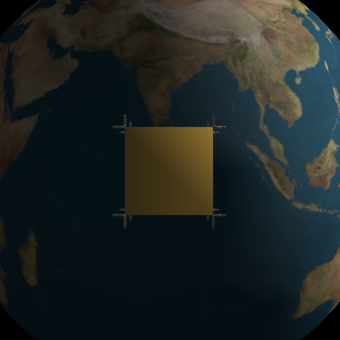
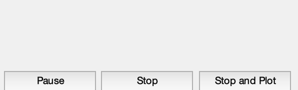
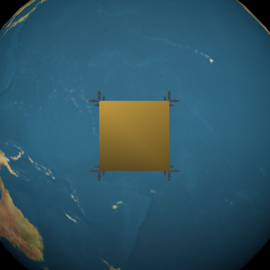
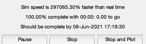
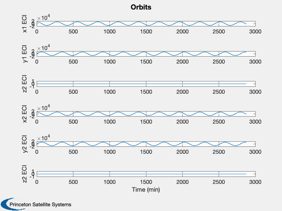
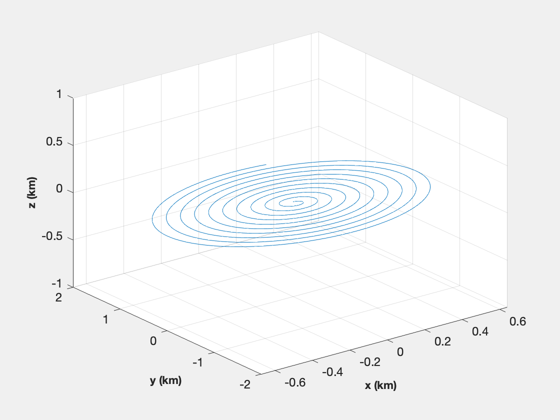

Simulates two orbits and plots their relative positions.
Since version 11.
------------------------------------------------------------------------
See also RelativeCoord., QLVLH, QPose, NewFig, Plot2D, TimeGUI,
XLabelS, YLabelS, ZLabelS, RK4, JD2000, TOrbit, El2RV, DrawSCPlugIn
------------------------------------------------------------------------
Contents
Clean up the workspace
clear g x1Plot x2Plot x1 x2
Global for the time interface
global simulationAction
simulationAction = ' ';
Constants
degToRad = pi/180;
Generate the orbit
nSim = 1000;
dTSim = 2*86.4;
tOrbit = (0:(nSim-1))*dTSim;
Load the spacecraft
g(1) = load('SatWThrusters.mat');
g(2) = g(1);
g(1).name = 'Sat #1';
g(2).name = 'Sat #2';
Initialize the arrays
x1Plot = zeros(6,nSim);
x2Plot = zeros(6,nSim);
Initialize the orbits
[r1,v1] = El2RV( [14164.0 0*degToRad 0 0 0 0]);
[r2,v2] = El2RV( [14164.0 0*degToRad 0 0 0 3/42164000]);
x1 = [r1;v1];
x2 = [r2;v2];
t = 0;
jD = JD2000;
Disturbances
a1 = [0;0;0];
a2 = [0;1;0]*1.e-9;
Initialize the 3D window
g(1).body(1).bHinge.q = QPose(QLVLH( x1(1:3), x1(4:6) ));
g(2).body(1).bHinge.q = QPose(QLVLH( x2(1:3), x2(4:6) ));
g(1).rECI = r1;
g(1).qLVLH = QLVLH( x1(1:3), x1(4:6) );
g(2).rECI = r2;
g(2).qLVLH = QLVLH( x2(1:3), x2(4:6) );
tag3DWindow = DrawSCPlugIn( 'initialize', g, [], [], 'Earth', jD );
ALim: [0 2]
ALimMode: 'auto'
AlphaScale: 'linear'
Alphamap: [1×64 double]
AmbientLightColor: [1 1 1]
BeingDeleted: off
Box: off
BoxStyle: 'back'
BusyAction: 'queue'
ButtonDownFcn: ''
CLim: [0 255]
CLimMode: 'auto'
CameraPosition: [3.4979e+06 1.9519e+07 1.2142e-09]
CameraPositionMode: 'manual'
CameraTarget: [2.4985e+06 1.3942e+07 8.6729e-10]
CameraTargetMode: 'manual'
CameraUpVector: [-1.0801e-17 -6.0272e-17 1]
CameraUpVectorMode: 'manual'
CameraViewAngle: 30
CameraViewAngleMode: 'manual'
Children: [102×1 Graphics]
Clipping: on
ClippingStyle: '3dbox'
Color: [0 0 0]
ColorOrder: [7×3 double]
ColorOrderIndex: 1
ColorScale: 'linear'
Colormap: [256×3 double]
ContextMenu: [0×0 GraphicsPlaceholder]
CreateFcn: ''
CurrentPoint: [2×3 double]
DataAspectRatio: [1 1 1]
DataAspectRatioMode: 'manual'
DeleteFcn: ''
FontAngle: 'normal'
FontName: 'Helvetica'
FontSize: 10
FontSizeMode: 'auto'
FontSmoothing: on
FontUnits: 'points'
FontWeight: 'normal'
GridAlpha: 0.15
GridAlphaMode: 'auto'
GridColor: [0.15 0.15 0.15]
GridColorMode: 'auto'
GridLineStyle: '-'
HandleVisibility: 'on'
HitTest: on
InnerPosition: [0 0 340 340]
Interactions: [1×1 matlab.graphics.interaction.interface.DefaultAxesInteractionSet]
Interruptible: on
LabelFontSizeMultiplier: 1.1
Layer: 'bottom'
Layout: [0×0 matlab.ui.layout.LayoutOptions]
Legend: [0×0 GraphicsPlaceholder]
LineStyleOrder: '-'
LineStyleOrderIndex: 1
LineWidth: 0.5
MinorGridAlpha: 0.25
MinorGridAlphaMode: 'auto'
MinorGridColor: [0.1 0.1 0.1]
MinorGridColorMode: 'auto'
MinorGridLineStyle: ':'
NextPlot: 'replace'
NextSeriesIndex: 1
OuterPosition: [-44.2 -37.4 416.5 402.9]
Parent: [1×1 Figure]
PickableParts: 'visible'
PlotBoxAspectRatio: [1 1.6816 1]
PlotBoxAspectRatioMode: 'manual'
Position: [0 0 340 340]
PositionConstraint: 'innerposition'
Projection: 'perspective'
Selected: off
SelectionHighlight: on
SortMethod: 'depth'
Tag: 'Spacecraft'
TickDir: 'out'
TickDirMode: 'auto'
TickLabelInterpreter: 'tex'
TickLength: [0.01 0.025]
TightInset: [0 0 0 0]
Title: [1×1 Text]
TitleFontSizeMultiplier: 1.1
TitleFontWeight: 'bold'
Toolbar: [1×1 AxesToolbar]
Type: 'axes'
Units: 'pixels'
UserData: []
View: [153.13 0]
Visible: off
XAxis: [1×1 NumericRuler]
XAxisLocation: 'bottom'
XColor: [0.15 0.15 0.15]
XColorMode: 'auto'
XDir: 'normal'
XGrid: on
XLabel: [1×1 Text]
XLim: [-6378100 6378100]
XLimMode: 'auto'
XMinorGrid: off
XMinorTick: off
XScale: 'linear'
XTick: [1×7 double]
XTickLabel: {7×1 cell}
XTickLabelMode: 'auto'
XTickLabelRotation: 0
XTickMode: 'auto'
YAxis: [1×1 NumericRuler]
YAxisLocation: 'left'
YColor: [0.15 0.15 0.15]
YColorMode: 'auto'
YDir: 'normal'
YGrid: on
YLabel: [1×1 Text]
YLim: [-6378100 1.5072e+07]
YLimMode: 'auto'
YMinorGrid: off
YMinorTick: off
YScale: 'linear'
YTick: [1×11 double]
YTickLabel: {11×1 cell}
YTickLabelMode: 'auto'
YTickLabelRotation: 0
YTickMode: 'auto'
ZAxis: [1×1 NumericRuler]
ZColor: [0.15 0.15 0.15]
ZColorMode: 'auto'
ZDir: 'normal'
ZGrid: on
ZLabel: [1×1 Text]
ZLim: [-6378100 6378100]
ZLimMode: 'auto'
ZMinorGrid: off
ZMinorTick: off
ZScale: 'linear'
ZTick: [1×7 double]
ZTickLabel: {7×1 cell}
ZTickLabelMode: 'auto'
ZTickLabelRotation: 0
ZTickMode: 'auto'
 
Initialize the time display
tToGoMem.lastJD = 0;
tToGoMem.lastStepsDone = 0;
tToGoMem.kAve = 0;
ratioRealTime = 0;
[ ratioRealTime, tToGoMem ] = TimeGUI( nSim, 0, tToGoMem, 0, dTSim, 'Relative Orbit Simulation' );

Generate the two orbits using numerical integration
for k = 1:nSim
[ ratioRealTime, tToGoMem ] = TimeGUI( nSim, k, tToGoMem, ratioRealTime, dTSim );
x1Plot(:,k) = x1;
x2Plot(:,k) = x2;
d = RelativeCoord( x1(1:3), x1(4:6), x2(1:3) );
g(1).body(1).bHinge.q = QPose(QLVLH( x1(1:3), x1(4:6) ));
g(2).body(1).bHinge.q = QPose(QLVLH( x2(1:3), x2(4:6) ));
g(1).rECI = x1(1:3);
g(2).rECI = x2(1:3);
g(1).qLVLH = QLVLH( x1(1:3), x1(4:6) );
g(2).qLVLH = QLVLH( x2(1:3), x2(4:6) );
DrawSCPlugIn( 'update spacecraft', tag3DWindow, g, jD );
x1 = RK4( 'FOrb', x1, dTSim, t, 'car', a1 );
x2 = RK4( 'FOrb', x2, dTSim, t, 'car', a2 );
t = t + dTSim;
jD = jD + dTSim/86400;
switch simulationAction
case 'pause'
pause
simulationAction = ' ';
case 'stop'
return;
case 'plot'
break;
end
end
j = 1:k;
r1 = x1Plot(1:3,j);
v1 = x1Plot(4:6,j);
r2 = x2Plot(1:3,j);
d = RelativeCoord( r1, v1, r2 );
 
Plotting
xLbl = 'Time (min)';
yLbl = ['x1 ECI';'y1 ECI';'z2 ECI';...
'x2 ECI';'y2 ECI';'z2 ECI'];
Plot2D( tOrbit(j)/60, [r1; r2], xLbl, yLbl, 'Orbits' )
NewFig('Relative Orbit')
plot3( d(1,j), d(2,j) ,d(3,j) )
grid
XLabelS('x (km)')
YLabelS('y (km)')
ZLabelS('z (km)')
 